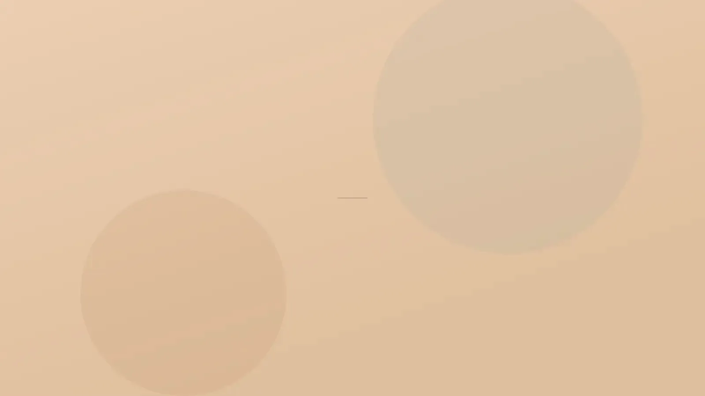

Enjeksiyon Uygulamaları · Lokal Yağ Birikimi
Tartıyı değil, inatçı bir bölgeyi hedefleyen uygulama.
Bölgesel lipoliz, kilonuz dengedeyken bile yerinde kalan küçük yağ birikimlerini hedefler: yağ hücrelerinin zarını bozmak üzere hazırlanmış bir solüsyon, ince iğnelerle doğrudan bu dokuya verilir. Gıdı, karın, bel ve bacak iç yüzü en sık değerlendirilen bölgelerdir. Zayıflama aracı olarak kullanılmaz; genel kilo fazlasında önce başka adımlar konuşulur.
 Temsilî görsel · yapay zekâ ile üretildi
Temsilî görsel · yapay zekâ ile üretildi
Tanım ve kapsam
Bölgesel lipoliz nedir, kilo vermeye yardımcı olur mu?
“Yağ yakan iğne”, “gıdı eritme” gibi adlar sosyal medyada sık geçer ve yöntemin yapabileceklerini gerçekte olduğundan çok daha büyük gösterir. Bu sayfada uygulamanın tıbbi adını kullanıyoruz.
Solüsyon, deri altında sınırları belli bir yağ birikiminin içine çok sayıda küçük noktadan verilir ve ulaştığı yağ hücrelerinin zarını bozması amaçlanır. Çene altı için geliştirilmiş preparatların çoğunda deoksikolik asit bulunur; bu madde, vücudun yağları sindirmek için ürettiği safra asitlerinin bir türevidir. Vücut bölgelerinde kullanılacak ürünün içeriği ve ruhsat durumu muayenede ayrıca açıklanır.
Etki tek günde ortaya çıkmaz. Hasar gören yağ hücreleri, bağışıklık sisteminin temizlik hücreleri tarafından haftalar içinde ortadan kaldırılır; hücrelerin içindeki yağ ise vücudun yağı kullandığı olağan metabolizma yollarına katılır. Bu temizlik sırasında bölgede ödem, sıcaklık ve dokunma hassasiyeti görülmesi beklenir ve bir sorun işareti sayılmaz.
Muayenehanemizde dört bölge değerlendirilir: gıdı (çene altı), karın, bel yanları ve bacak iç yüzü (uyluk iç yüzü ile diz içi). Alan genişledikçe bir seansta verilebilecek miktar sınırlandığından, karın gibi geniş bölgelerde plan daha fazla seansa bölünür. Bölge bazında ayrıntı çene ve jawline ile vücut sayfalarındadır.
Zayıflama yöntemi değildir: bir seansta etkilenen yağ gram düzeyindedir ve kilonuzda ölçülebilir bir düşüş beklenmez. Vücudun genelinde fazla kilo varsa ilk adım beslenme, hareket ve gerekiyorsa iç hastalıkları açısından değerlendirmedir.
Karın içindeki yağa ulaşmaz: iç organların çevresindeki yağ kasların altında kalır; bu uygulama yalnızca deri altındaki katmanla ilgilidir. Beldeki kalınlaşmanın büyük kısmı iç yağdan kaynaklanıyorsa beklenen fark oluşmaz.
Cilt fazlalığını gidermez: altındaki hacim azaldığında deri, esnekliği zayıfsa daha gevşek görünebilir. Yaygın ve kalın bir yağ dokusu ya da belirgin sarkma estetik cerrahinin alanına girer; böyle bir durumda enjeksiyon planlanmaz.
Rakamla söz verilmez: aynı bölgeye aynı miktar uygulansa bile iki kişinin dokusu farklı yanıt verir. Bu yüzden “şu kadar incelir” gibi bir öngörüde bulunmuyoruz; bazı kişilerde değişiklik belirgin olmayabilir.
Değildir; her bölgede ayırt edilmesi gereken başka nedenler vardır. Gıdı: iki parmak arasında tutulabilen yüzeysel yağ bu uygulamanın hedefidir. Dolgunluk boyun kasının derininde kalan yağdan, tükürük bezlerinden, küçük ya da geride duran bir çene yapısından veya deri gevşekliğinden kaynaklanıyorsa solüsyonun etkisi olmaz; gevşeklik öndeyse HIFU, çene desteği gerekiyorsa dolgu uygulamaları konuşulur.
Karın ve bel: göbek çevresinde fıtık, doğum sonrası karın kaslarının ayrışması (diastaz) ya da gaz ve şişkinlik yağ birikimi gibi görünebilir; bu ayrım netleşmeden enjeksiyon yapılmaz. Bacak iç yüzü: iki bacakta simetrik, dokunmakla ağrılı ve kolay morarmayla giden yağ artışı lipödemi düşündürür; bu tabloda lipoliz uygun değildir. Damar ve ödem kaynaklı şişlikler de ayrıca araştırılır.
Boyunda yeni fark edilen bir şişlik, tiroit büyümesi ya da ele gelen bir bez varsa önce bunun nedeni aydınlatılır; bu değerlendirmenin nasıl yapıldığı hekim muayenesi sayfasında anlatılır. Bölgelere göre farklı nedenleri bölgesel yağlanma sayfasında ayrıntılı bulabilirsiniz.
Seans ve iyileşme
Seanslar nasıl ilerler, ilk haftalarda neler olur?
Her seansı bir iyileşme dönemi izler. Bu dönem bitmeden bölgeye bakıp karar vermek yanıltıcı olacağından takvim aceleye getirilmez.
Kontrol zamanı
Bir sonraki seansa, önceki uygulamanın etkisi görüldükten sonra karar verilir. Değişiklik beklenenden azsa dizi aynen sürdürülmez.
Çubuk uzunlukları yalnız karşılaştırma içindir; size özel süreler muayenede konuşulur.
- Muayene: dolgunluğun kaynağı, son yıllardaki kilo değişimi, hastalıklar ve ilaçlar
- Bölgenin ayakta ve oturarak incelenmesi, işaretleme
- Aydınlatma ve yazılı onam; beklenen şişlik süresi anlatılır
- İlk seans; şişlik döneminde yalnızca iyileşme izlenir
- Kontrol muayenesi: devam, ara verme ya da başka yönteme geçiş
“Bir bölgeye hiç dokunmamayı önermek de hekimliğin parçasıdır.”

Temsilî görsel · yapay zekâ ile üretildiNedeni birlikte ayırt edelim
Sorun yağdan çok yüzeydeki pürüzlü görünümse selülit planı ayrıca değerlendirilir.
Randevu talebi- Gebelik ve emzirme: bu dönem boyunca uygulama yapılmaz.
- Vücut genelinde fazla kilo: bölgesel bir işlem bu tabloda beklentiyi karşılamaz; beslenme düzeni ve iç hastalıkları açısından değerlendirme önceliklidir.
- Bölgede iyileşmemiş bir cilt sorunu: yara, sivilce iltihabı, egzama atağı ya da enfeksiyon varken önce cilt toparlanır.
- Aşırı duyarlılık öyküsü: bölgesel uyuşturucular, cilt temizleyici antiseptikler ya da enjeksiyon içeriği karşısında daha önce kaşıntı, kurdeşen veya şişlik yaşadıysanız bunu mutlaka söyleyin.
- Kan sulandırıcı ilaç ya da pıhtılaşma sorunu: morluk ve şişlik daha belirgin olabilir. İlacınızı bırakmayın, dozunu değiştirmeyin; gerekiyorsa bu konu ilacı yazan hekiminizle birlikte konuşulur.
- Düzenli izlem gerektiren hastalıklar: karaciğer, böbrek ya da tiroit hastalığı, süren bir otoimmün hastalık ya da yara iyileşmesini yavaşlatan genel bir sağlık sorunu.
- Gıdı için: yutkunurken takılma hissi, sesinizde son dönemde başlayan kısıklık ya da boyunda yeni bir şişlik varsa uygulama bu belirtilerin nedeni anlaşılana kadar bekletilir.
- Karın ve bacak için: değerlendirilmemiş fıtık, yakın zamanda geçirilmiş ameliyat, bacakta belirgin varis, pıhtı (tromboz) öyküsü ya da lipödem şüphesi planı değiştirir veya uygulamayı dışarıda bırakır.
- 18 yaş altı: planlanmaz.
İyileşmek yerine her gün kötüleşen ağrı ya da şişlik, ciltte koyulaşan renk, kabuklanma veya yara, ateşle birlikte yayılan kızarıklık görürseniz kontrol tarihini beklemeyin. Gıdı uygulamasından sonra soluk almakta ya da yutkunmakta güçlük, seste kısılma; vücutta yaygın kurdeşen veya dudakta ve dilde şişme gelişirse doğrudan 112 Acil Çağrı Merkezi’ni arayın ya da en yakın hastanenin acil birimine başvurun.
Sonrası
Uygulamadan sonraki günlerde nelere dikkat etmelisiniz?
Günlük yaşamınıza çoğunlukla ertesi gün dönebilirsiniz; ancak bölge birkaç gün dinlenmeye ihtiyaç duyar. Sauna, hamam, çok sıcak banyo ve ağır antrenman iki gün ertelenir, uygulama alanı ovalanmaz ya da yoğurulmaz. Bölgeye göre küçük önlemler işe yarar: gıdıda yastığı biraz yükseltmek, karın ve belde sıkan kemerleri birkaç gün kullanmamak, bacak iç yüzünde uzun süre hareketsiz oturmamak. Şişliğin inmesine yardım etmesi için ilk günlerde tuzlu yiyecekleri azaltıp suyu artırabilirsiniz. Ağrınız olursa kullanabileceğiniz ilaç size önceden söylenir; kanı sulandıran bir ağrı kesiciyi kendiliğinden seçmeyin. Birinci ayın sonuna kadar bölge beklediğinizden dolu görünebilir; bu görüntü bir sonraki seansın gerekçesi sayılmaz. Onamda konuşulan olası durumlar şunlardır: uzun süren ödem, ele gelen düğümcükler, yüzey düzensizliği, geçici his azalması, enfeksiyon ve iz; gıdıda seyrek olarak alt dudağı hareket ettiren sinirin geçici etkilenmesiyle gülüşte asimetri, erkeklerde sakal bölgesinde geçici seyrelme. İzlem ayrıntıları uygulama sonrası takip sayfasındadır.
Sık gelen sorular
Bir soru seçin, yanıtını okuyun
Bir adım ötesi
Nedeni ayırmadan plan kurmayız
Dolgunluğun kaynağını birlikte ayırt edelim. Muayeneden, bu bölge için lipoliz yerine başka bir yöntemin öne çıktığı bir plan da çıkabilir.
Metni hazırlayan ve tıbbi açıdan gözden geçiren: Uzm. Dr. Rahmi Cebeci (Aile Hekimliği Uzmanı · Medikal Estetik Sertifikalı).
Buradaki anlatım herkese yöneliktir; size özel bir teşhis ya da tedavi planı sunmaz, muayenenin yerini tutmaz. Her uygulamanın etkisi kişiye göre farklı olur.